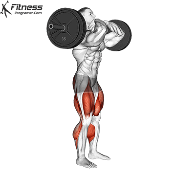

Barbell Squat

Squats build lower body muscle strength, endurance, and power. Additionally, they engage the core and improve strength and stability in the trunk and upper body. The most elite and pro athletes use the squat as the basis of a well-rounded weight training program.
Front Barbell Squat
A front barbell squat is the same as other squat variations except for the placement of the weight. In a front squat, the barbell rests on the front of the shoulders, held in place by crossing the arms over the bar or with an underhand grip, as shown. Be aware, however, that this variation requires a lot of shoulder and wrist mobility and may not be appropriate for everyone.